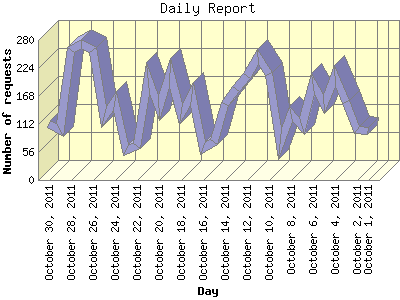

The Daily Report identifies the activity for each day within the reporting period. Remember that one page hit can result in several server requests as the images for each page are loaded.

| Day | Number of requests | Number of page requests | |
|---|---|---|---|
| 1. | October 1, 2011 | 98 | 75 |
| 2. | October 2, 2011 | 100 | 73 |
| 3. | October 3, 2011 | 156 | 116 |
| 4. | October 4, 2011 | 208 | 154 |
| 5. | October 5, 2011 | 152 | 111 |
| 6. | October 6, 2011 | 191 | 136 |
| 7. | October 7, 2011 | 107 | 79 |
| 8. | October 8, 2011 | 132 | 93 |
| 9. | October 9, 2011 | 72 | 60 |
| 10. | October 10, 2011 | 212 | 156 |
| 11. | October 11, 2011 | 246 | 177 |
| 12. | October 12, 2011 | 209 | 151 |
| 13. | October 13, 2011 | 182 | 142 |
| 14. | October 14, 2011 | 153 | 112 |
| 15. | October 15, 2011 | 75 | 67 |
| 16. | October 16, 2011 | 65 | 52 |
| 17. | October 17, 2011 | 172 | 127 |
| 18. | October 18, 2011 | 132 | 99 |
| 19. | October 19, 2011 | 214 | 158 |
| 20. | October 20, 2011 | 145 | 112 |
| 21. | October 21, 2011 | 205 | 154 |
| 22. | October 22, 2011 | 68 | 56 |
| 23. | October 23, 2011 | 61 | 53 |
| 24. | October 24, 2011 | 158 | 117 |
| 25. | October 25, 2011 | 126 | 97 |
| 26. | October 26, 2011 | 260 | 86 |
| 27. | October 27, 2011 | 272 | 56 |
| 28. | October 28, 2011 | 259 | 55 |
| 29. | October 29, 2011 | 99 | 30 |
| 30. | October 30, 2011 | 112 | 36 |
Most active day October 11, 2011 : 177 pages sent. 272 requests handled.
Daily average: 99 pages sent. 154 requests handled.
This report was generated on October 31, 2011 08:07.
Report time frame October 1, 2011 01:07 to October 30, 2011 23:18.
| Web statistics report produced by: analog 6.0 / Report Magic 2.21 |